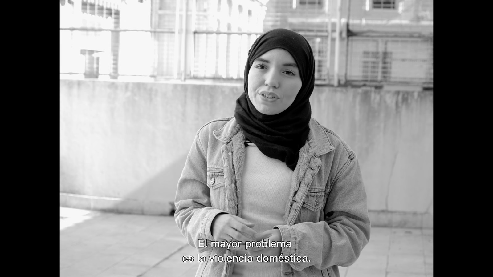
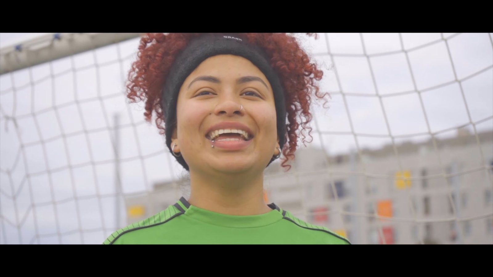

Asociación Nueva Vida
More than three years documenting the work of an organisation that walks alongside people on the margins. My main role is that of a documentary filmmaker: recording the stories of the people it supports and the programmes that change their lives.
 Cover still
Cover still- Client
- Asociación Nueva Vida, Santander
- Period
- 2023–present
- My role
- Documentary filmmaker
- Format
- Campaigns, films and social media
The organisation
Asociación Nueva Vida is a non-profit organisation that defends the rights of people in situations of exclusion. Born in Santander, it now works in Cantabria, Bizkaia and the Balearic Islands, and in 2024 it supported more than 4,000 people. Its programmes cover homelessness, trafficking and prostitution, migrants and asylum seekers, training and employment, and people in prison, this last one in collaboration with the Spanish prison administration and one of the organisation’s hallmarks. Shelters, reception centres, street outreach, legal and psychological support, and NUVITEX, a textile social enterprise that trains and employs trafficking survivors.

PlayMy role
Documentary filmmaker, first of all. My core work is to capture the stories of the people Nueva Vida supports and the programmes that make change possible: patient documentary work, made with time and respect, that becomes testimony, memory and the raw material for campaigns. From there I also take on the campaigns themselves, from the idea and the script to the shoot and the edit, and the copy that goes out on social media.
 Play
Play
 Play
Play

PlayCampaigns
- #Son150 · 2026More than 150 places in Cantabria where prostitution takes place. Behind them, trafficking goes on. Digital billboards in Santander, a boat through the bay and a film of the field research.
- Ayer fuimos refugiados. Hoy #SomosRefugio · 2026For World Refugee Day: three films in which refugees play Spanish exiles, Picasso, Clara Campoamor and Matilde de la Torre.
- El Free Tour de la Trata · 2025A walking tour through the trafficking hidden in plain sight. 4M+ views and national press.
- Tan de Santander como tú · 2024For World Homeless Day: personal stories that show anyone can end up on the street.
- Misión (im)posible · 2024The housing search migrants face, and the one they should have: films and posters in Santander and Bilbao.
- Alice Gordon Gulick · 2024A three-part documentary series on the educator who opened schools for women in Santander in 1871, and on the right to education.